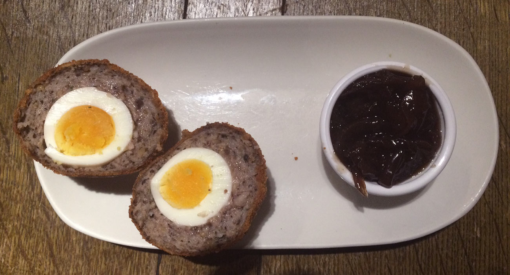

tanner and co
the scotch egg
50 Bermondsey Street SE1 3UD
Rating: 5/5
One of London's best scoth eggs. Perfectly runny yolk, crisp on the outside. No dip needed.
the water poet
scotch egg from the bar
9-11 Folgate Street, E1 6BX
Rating: 1/5
Once upon a time this scotch egg was hot with a runny yolk. But when you leave it sat out all day it turns out like this.

the edinboro castle
homemade scotch egg with chutney
57 Mornington Terrace, NW1 7RU
Rating: 2/5
The egg was served warm, but overcooked. Not a runny yolk to be seen.
